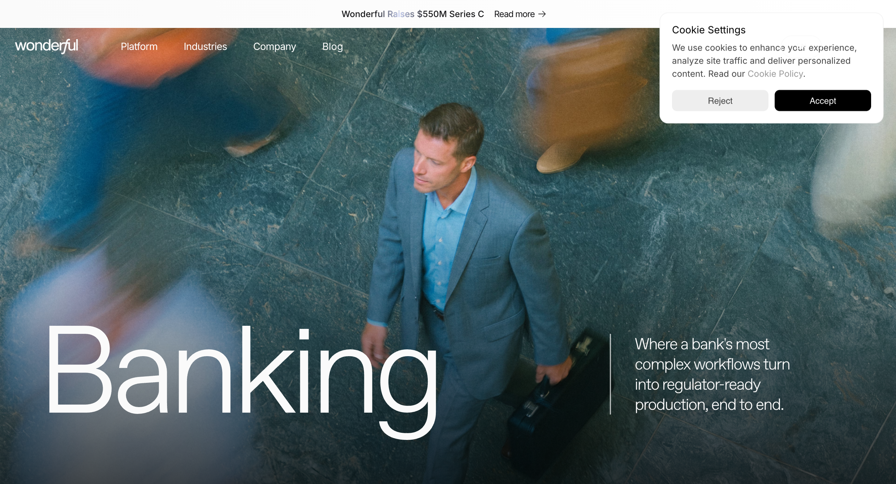
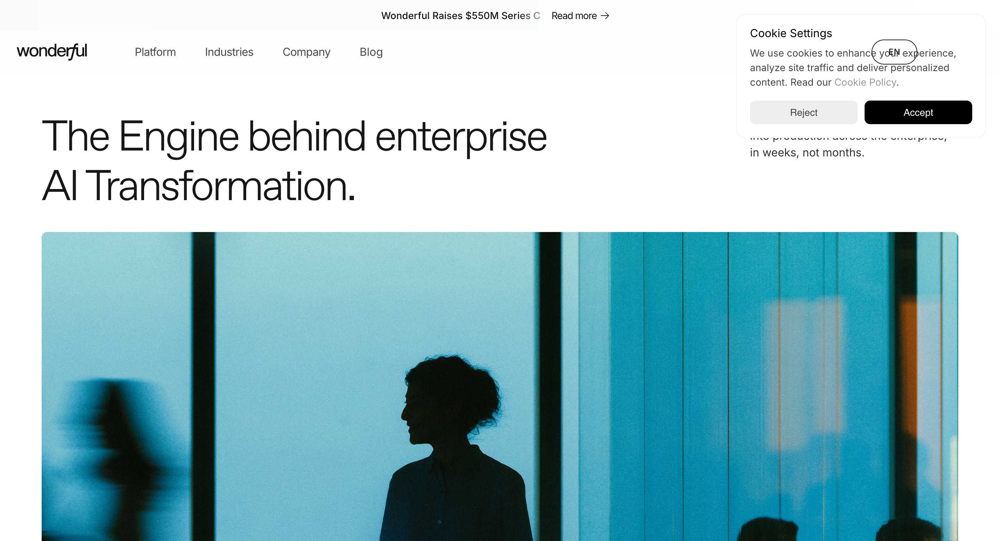
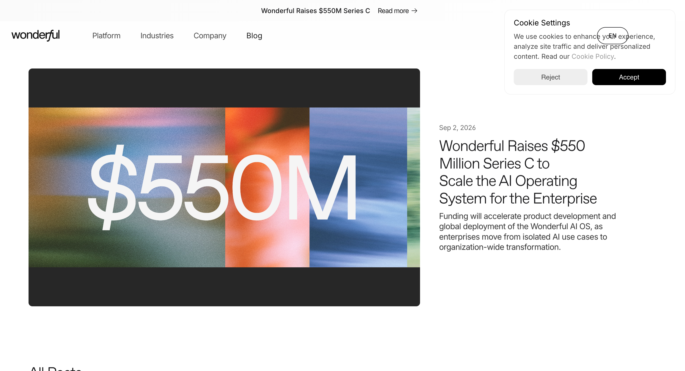
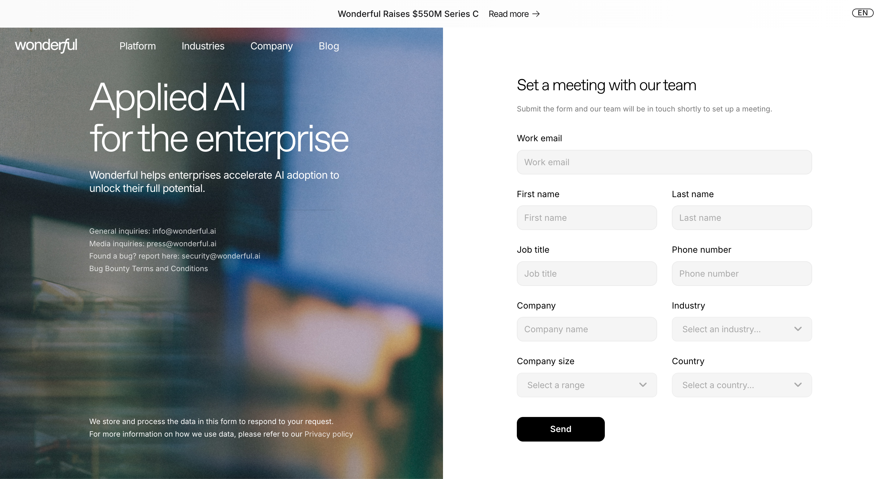

O timing / R rozkład
01 / Fala punktów
450 ms wejście, 1400 ms wyjście. Okres próbki 17.05 s.
opacity · ease-in-outDesign system / Wonderful.ai / 12.09.2026
System wizualny oparty na lekkiej typografii, filmowych kadrach i technicznych detalach. Od fundamentów po działające sekwencje animacji.
14 stron · 16 pomiarów · CSS + JSON
To rekonstrukcja referencyjna, nie oficjalny brandbook. Katalog pokazuje własną implementację. Font ABC Favorit nie jest dołączony — wygląd tekstu zależy od lokalnych fontów; domyślnie widzisz fallback Arial.
01 / Foundations
Kolory pochodzą z CSS strony. Nazwy i role zostały uporządkowane na potrzeby ponownego użycia. Pomarańczowy należy do diagramów i detali.
O: CSS / computed styles · Ciemne kolory tekstu statusów to uzupełnienie R. Pełne tokeny: JSON / CSS.
02 / Typography
ABC Favorit Light 300 dla nagłówków. Inter dla tekstu i UI. IBM Plex Mono dla technicznych etykiet. Próbki poniżej używają fallbacku, gdy font nie jest dostępny lokalnie.
Display / home
82 → 42 px
105% / −5%
Technologia
w codziennej pracy.
Section heading
48 → 34 px
105–115% / −4%
Jedna idea w każdej sekcji.
Card heading
32 / 22 / 24 px
115% / −4%
Mniej dekoracji.
Więcej treści.
Body / adaptacja R
17 px / 160%
Wyrazisty design system nie potrzebuje wielu kolorów. Rozpoznawalność tworzą konsekwentna typografia, rytm odstępów, proporcje obrazów i powtarzalny sposób poruszania elementów.
Technical / 16 px
IBM Plex Mono
Data · Workspaces · Guardrails
03 / Components
Źródłowa geometria i stylistyka uzupełniona o stany focus, disabled, walidację i obsługę klawiatury. Interakcje tutaj są lokalną demonstracją.
O: radius 50 px, height 50 / 44 px.
R: hover 180 ms, pressed scale .98, focus ring.
O: białe wypełnienie lub jasny obrys.
R: kompletne stany klawiatury i dotyku.
Case study / demo
W: kompozycja case study. R: abstrakcyjne tło demo, media zoom 1.035 / 500 ms.
R: pole 44+ px, font 16 px, walidacja i feedback. Dane nie są wysyłane ani zapisywane.
Fotografia i treść zmieniają się w obrębie stałej ramy.
Ta sama struktura, nowy kontekst i dopasowane media.
Warianty zachowują wspólną typografię i rytm przestrzeni.
W: pattern branż. R: tabs 250 ms, strzałki klawiatury, Home / End.
Kolor, typografia, spacing i geometria tworzą wspólną bazę każdego szablonu.
Każdy komponent ma warianty, stany i określone zachowanie na małych ekranach.
Ruch jest opisany przez trigger, czas, easing, stan końcowy i wariant reduced motion.
R: dodatkowy wzorzec disclosure. Natywny HTML; treść działa bez JavaScript.
04 / Motion library
Cztery demonstracje oparte na odczytanych przebiegach oraz dwa zalecane wzorce. Pętle zatrzymują się poza ekranem. Zmiana preferencji pokazuje kompletny stan statyczny.
Ustawienia ruchu
Film hero opisany w MOTION.md; katalog nie pobiera plików wideo. Dokładne proporcje i delaye wszystkich oryginalnych instancji pozostają w evidence. Demo etykiety jest skończone, uruchamiane przyciskiem.
05 / Page patterns
Schematy pokazują strukturę, nie finalny projekt strony. Pełna specyfikacja opisuje dziesięć rodzin szablonów.
Home
Hero → proof → narracja → produkt → branże
Product
Ambient → architektura → możliwości → zaufanie
Industry
Duża nazwa → operacje → workflow → CTA
Company / careers
Jasne intro → zdjęcie → model → ludzie
Editorial
Metadane → tytuł → obraz → wąska kolumna
Contact
Fotografia + formularz → stos na mobile
06 / Evidence
Oryginalne zrzuty z podstron. Niektóre zawierają panel cookies. Paleta i typografia zostały dodatkowo odczytane z DOM/CSS.



